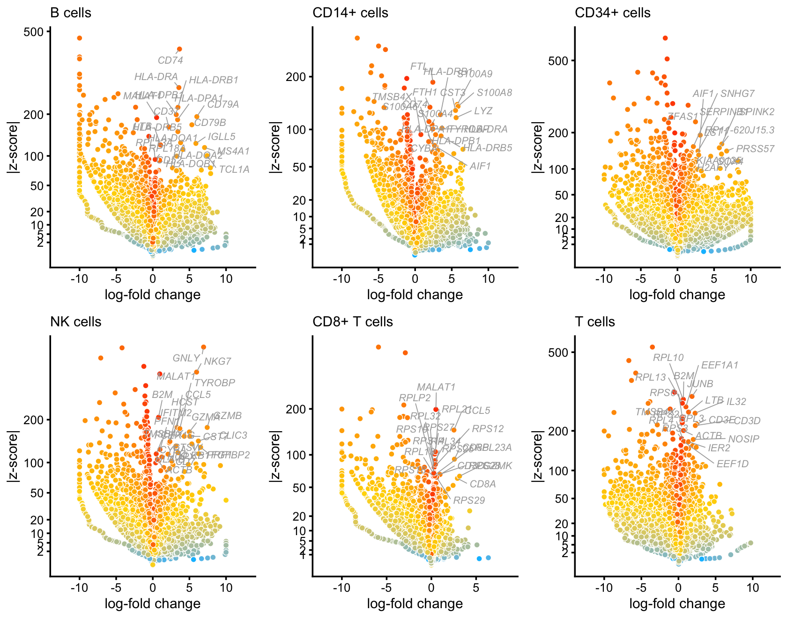
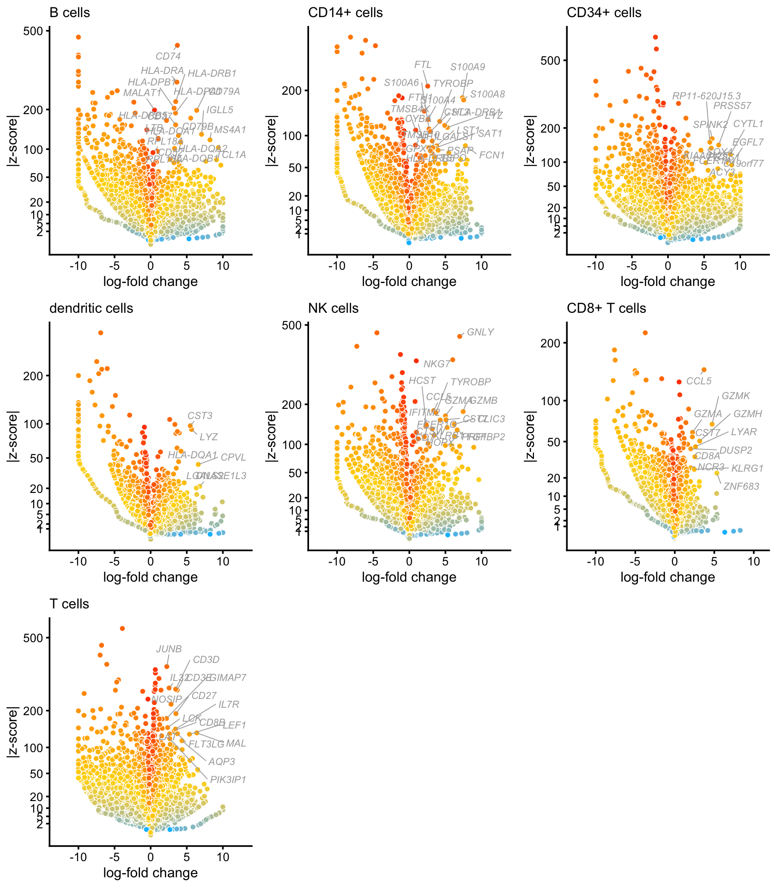
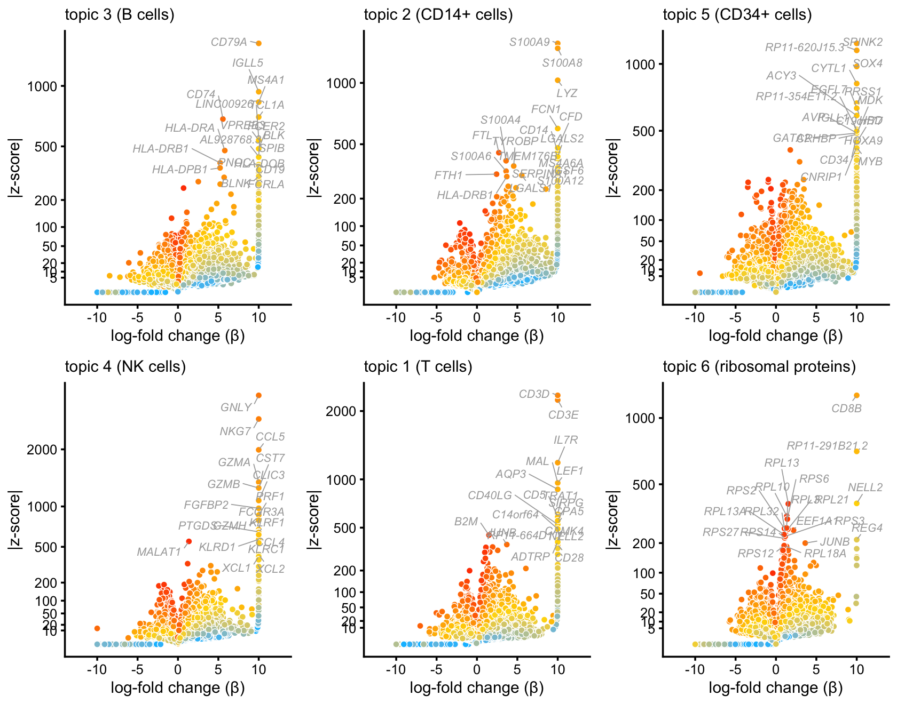

Last updated: 2021-02-09
Checks: 6 1
Knit directory: single-cell-topics/analysis/
This reproducible R Markdown analysis was created with workflowr (version 1.6.2.9000). The Checks tab describes the reproducibility checks that were applied when the results were created. The Past versions tab lists the development history.
Great! Since the R Markdown file has been committed to the Git repository, you know the exact version of the code that produced these results.
Great job! The global environment was empty. Objects defined in the global environment can affect the analysis in your R Markdown file in unknown ways. For reproduciblity it’s best to always run the code in an empty environment.
The command set.seed(1) was run prior to running the code in the R Markdown file. Setting a seed ensures that any results that rely on randomness, e.g. subsampling or permutations, are reproducible.
Great job! Recording the operating system, R version, and package versions is critical for reproducibility.
To ensure reproducibility of the results, delete the cache directory plots_purified_pbmc_cache and re-run the analysis. To have workflowr automatically delete the cache directory prior to building the file, set delete_cache = TRUE when running wflow_build() or wflow_publish().
Great job! Using relative paths to the files within your workflowr project makes it easier to run your code on other machines.
Great! You are using Git for version control. Tracking code development and connecting the code version to the results is critical for reproducibility.
The results in this page were generated with repository version aecd700. See the Past versions tab to see a history of the changes made to the R Markdown and HTML files.
Note that you need to be careful to ensure that all relevant files for the analysis have been committed to Git prior to generating the results (you can use wflow_publish or wflow_git_commit). workflowr only checks the R Markdown file, but you know if there are other scripts or data files that it depends on. Below is the status of the Git repository when the results were generated:
Ignored files:
Ignored: analysis/figure/
Ignored: data/droplet.RData
Ignored: data/pbmc_68k.RData
Ignored: data/pbmc_purified.RData
Ignored: data/pulseseq.RData
Ignored: output/droplet/diff-count-droplet.RData
Ignored: output/droplet/fits-droplet.RData
Ignored: output/droplet/rds/
Ignored: output/pbmc-68k/fits-pbmc-68k.RData
Ignored: output/pbmc-68k/rds/
Ignored: output/pbmc-purified/fits-pbmc-purified.RData
Ignored: output/pbmc-purified/rds/
Ignored: output/pulseseq/diff-count-pulseseq.RData
Ignored: output/pulseseq/fits-pulseseq.RData
Ignored: output/pulseseq/rds/
Untracked files:
Untracked: .DS_Store
Untracked: analysis/plots_purified_pbmc_cache/
Untracked: plots/
Note that any generated files, e.g. HTML, png, CSS, etc., are not included in this status report because it is ok for generated content to have uncommitted changes.
These are the previous versions of the repository in which changes were made to the R Markdown (analysis/plots_purified_pbmc.Rmd) and HTML (docs/plots_purified_pbmc.html) files. If you’ve configured a remote Git repository (see ?wflow_git_remote), click on the hyperlinks in the table below to view the files as they were in that past version.
| File | Version | Author | Date | Message |
|---|---|---|---|---|
| Rmd | aecd700 | Peter Carbonetto | 2021-02-09 | workflowr::wflow_publish(“plots_purified_pbmc.Rmd”, verbose = TRUE) |
| Rmd | 1f0eb8c | Peter Carbonetto | 2021-02-08 | More improvements to volcano plots in plots_purified_pbmc.Rmd. |
| Rmd | be27738 | Peter Carbonetto | 2021-02-08 | Improved volcano plots for FACS cell populations in plots_purified_pbmc.Rmd. |
| html | ab3eeb8 | Peter Carbonetto | 2021-01-29 | Build site. |
| Rmd | 0b73397 | Peter Carbonetto | 2021-01-29 | Added more volcano plots to plots_purified_pbmc analysis. |
| html | 42ebc62 | Peter Carbonetto | 2021-01-29 | Added volcano plots for FACS populations in plots_purified_pbmc |
| Rmd | 4edefd0 | Peter Carbonetto | 2021-01-29 | workflowr::wflow_publish(“plots_purified_pbmc.Rmd”) |
| Rmd | 01c1139 | Peter Carbonetto | 2021-01-29 | Adding new code for volcano plots in plots_purified_pbmc analysis. |
| html | a4bc59b | Peter Carbonetto | 2021-01-06 | Re-built plots_purified_pbmc page after removing cache. |
| Rmd | b92d4db | Peter Carbonetto | 2021-01-06 | workflowr::wflow_publish(“plots_purified_pbmc.Rmd”) |
| html | a0b6c2b | Peter Carbonetto | 2021-01-06 | Build site. |
| Rmd | ed8a595 | Peter Carbonetto | 2021-01-06 | workflowr::wflow_publish(“plots_purified_pbmc.Rmd”, verbose = TRUE) |
| html | 0411340 | Peter Carbonetto | 2021-01-06 | Added scatterplots to plots_purified_pbmc analysis. |
| Rmd | e16bf80 | Peter Carbonetto | 2021-01-06 | workflowr::wflow_publish(“plots_purified_pbmc.Rmd”) |
| Rmd | a12c42a | Peter Carbonetto | 2021-01-05 | Implemented function lfc_scatterplot in functions_for_plots_purified_pbmc.R. |
| Rmd | 9fd0455 | Peter Carbonetto | 2021-01-05 | Added steps to save volcano plots in plots_purified_pbmc analysis. |
| html | fad8e3d | Peter Carbonetto | 2021-01-05 | First build of plots_purified_pbmc page. |
| Rmd | bf07930 | Peter Carbonetto | 2021-01-05 | workflowr::wflow_publish(“plots_purified_pbmc.Rmd”, verbose = TRUE) |
| Rmd | 40c2d84 | Peter Carbonetto | 2021-01-04 | Working on log-fold change scatterplots in plots_purified_pbmc analysis. |
| Rmd | e437ddf | Peter Carbonetto | 2021-01-04 | Working on volcano plots in plots_purified_pbmc analysis. |
Here we perform a differential expression analysis using the topic model fit to the mixture of FACS-purified data, as well as the clusters identified from this topic model.
Load the packages used in the analysis below, as well as additional functions that we will use to generate some of the plots.
library(Matrix)
library(fastTopics)
library(ggplot2)
library(ggrepel)
library(cowplot)
source("../code/functions_for_plots_purified_pbmc.R")Load the count data, the \(K = 6\) topic model fit, and the 7 clusters identified in the clustering analysis.
load("../data/pbmc_purified.RData")
fit <- readRDS(file.path("../output/pbmc-purified/rds",
"fit-pbmc-purified-scd-ex-k=6.rds"))$fit
fit <- poisson2multinom(fit)
samples <- readRDS("../output/pbmc-purified/clustering-pbmc-purified.rds")Perform differential expression analysis using the FACS labeling:
celltype <- as.character(samples$celltype)
celltype[celltype == "CD4+/CD45RA+/CD25- Naive T" |
celltype == "CD4+/CD45RO+ Memory" |
celltype == "CD8+/CD45RA+ Naive Cytotoxic" |
celltype == "CD4+ T Helper2" |
celltype == "CD4+/CD25 T Reg"] <- "T cell"
celltype <- factor(celltype)
table(celltype)
diff_count_facs <- diff_count_clusters(celltype,counts)
# celltype
# CD14+ Monocyte CD19+ B CD34+ CD56+ NK
# 2612 10085 9232 8385
# CD8+ Cytotoxic T T cell
# 10209 54132
# Fitting 21952 x 6 = 131712 univariate Poisson models.
# Computing log-fold change statistics.
# Stabilizing log-fold change estimates using adaptive shrinkage.
Warning: The above code chunk cached its results, but it won’t be re-run if previous chunks it depends on are updated. If you need to use caching, it is highly recommended to also set knitr::opts_chunk$set(autodep = TRUE) at the top of the file (in a chunk that is not cached). Alternatively, you can customize the option dependson for each individual chunk that is cached. Using either autodep or dependson will remove this warning. See the knitr cache options for more details.
These volcano plots summarize the results of the differential expression analysis using the FACS labeling:
p1 <- volcano_plot(diff_count_facs,"CD19+ B",genes$symbol,
label_above_quantile = 0.9995,
subsample_below_quantile = 0.5,
filter_low_counts = 5e-5) +
guides(fill = "none") +
ggtitle("B cells")
p2 <- volcano_plot(diff_count_facs,"CD14+ Monocyte",genes$symbol,
label_above_quantile = 0.9995,
subsample_below_quantile = 0.5,
filter_low_counts = 5e-5) +
guides(fill = "none") +
ggtitle("CD14+ cells")
p3 <- volcano_plot(diff_count_facs,"CD34+",genes$symbol,
label_above_quantile = 0.999,
subsample_below_quantile = 0.5,
filter_low_counts = 5e-5) +
guides(fill = "none") +
ggtitle("CD34+ cells")
p4 <- volcano_plot(diff_count_facs,"CD56+ NK",genes$symbol,
label_above_quantile = 0.9995,
subsample_below_quantile = 0.5,
filter_low_counts = 5e-5) +
guides(fill = "none") +
ggtitle("NK cells")
p5 <- volcano_plot(diff_count_facs,"CD8+ Cytotoxic T",genes$symbol,
label_above_quantile = 0.9995,
subsample_below_quantile = 0.5,
filter_low_counts = 5e-5) +
guides(fill = "none") +
ggtitle("CD8+ T cells")
p6 <- volcano_plot(diff_count_facs,"T cell",genes$symbol,
label_above_quantile = 0.999,
subsample_below_quantile = 0.5,
filter_low_counts = 5e-5) +
guides(fill = "none") +
ggtitle("T cells")
plot_grid(p1,p2,p3,p4,p5,p6,nrow = 2,ncol = 3)
Perform differential expression analysis using the clusters:
table(samples$cluster)
diff_count_clusters <- diff_count_clusters(samples$cluster,counts)
#
# B CD14+ CD34+ CD8+ dendritic NK T
# 10439 2956 8237 3757 308 8380 60578
# Fitting 21952 x 7 = 153664 univariate Poisson models.
# Computing log-fold change statistics.
# Stabilizing log-fold change estimates using adaptive shrinkage.
Warning: The above code chunk cached its results, but it won’t be re-run if previous chunks it depends on are updated. If you need to use caching, it is highly recommended to also set knitr::opts_chunk$set(autodep = TRUE) at the top of the file (in a chunk that is not cached). Alternatively, you can customize the option dependson for each individual chunk that is cached. Using either autodep or dependson will remove this warning. See the knitr cache options for more details.
These volcano plots summarize the results of the differential expression analysis using the clusters:
p7 <- volcano_plot(diff_count_clusters,"B",genes$symbol,
label_above_quantile = 0.999,
subsample_below_quantile = 0.5,
filter_low_counts = 5e-5) +
guides(fill = "none") +
ggtitle("B cells")
# 10134 out of 18417 data points will be included in plot
p8 <- volcano_plot(diff_count_clusters,"CD14+",genes$symbol,
label_above_quantile = 0.999,
subsample_below_quantile = 0.5,
filter_low_counts = 5e-5) +
guides(fill = "none") +
ggtitle("CD14+ cells")
# 10130 out of 18417 data points will be included in plot
p9 <- volcano_plot(diff_count_clusters,"CD34+",genes$symbol,
label_above_quantile = 0.999,
subsample_below_quantile = 0.5,
filter_low_counts = 5e-5) +
guides(fill = "none") +
ggtitle("CD34+ cells")
# 10130 out of 18417 data points will be included in plot
p10 <- volcano_plot(diff_count_clusters,"dendritic",genes$symbol,
label_above_quantile = 0.999,
subsample_below_quantile = 0.5,
filter_low_counts = 5e-5) +
guides(fill = "none") +
ggtitle("dendritic cells")
# 10130 out of 18417 data points will be included in plot
p11 <- volcano_plot(diff_count_clusters,"NK",genes$symbol,
label_above_quantile = 0.999,
subsample_below_quantile = 0.5,
filter_low_counts = 5e-5) +
guides(fill = "none") +
ggtitle("NK cells")
# 10130 out of 18417 data points will be included in plot
p12 <- volcano_plot(diff_count_clusters,"CD8+",genes$symbol,
label_above_quantile = 0.999,
subsample_below_quantile = 0.5,
filter_low_counts = 5e-5) +
guides(fill = "none") +
ggtitle("CD8+ T cells")
# 10130 out of 18417 data points will be included in plot
p13 <- volcano_plot(diff_count_clusters,"T",genes$symbol,
label_above_quantile = 0.999,
subsample_below_quantile = 0.5,
filter_low_counts = 5e-5) +
guides(fill = "none") +
ggtitle("T cells")
# 10131 out of 18417 data points will be included in plot
plot_grid(p7,p8,p9,p10,p11,p12,p13,nrow = 3,ncol = 3)
Perform differential expression analysis using the multinomial topic model, after removing the dendritic cells cluster, and after merging the two T cell topics:
rows <- which(samples$cluster != "dendritic")
fit_merged <- select_loadings(fit,loadings = rows)
fit_merged <- merge_topics(fit,c(1,6))
diff_count_topics <- diff_count_analysis(fit_merged,counts)
# Fitting 21952 x 5 = 109760 univariate Poisson models.
# Computing log-fold change statistics.
# Stabilizing log-fold change estimates using adaptive shrinkage.
Warning: The above code chunk cached its results, but it won’t be re-run if previous chunks it depends on are updated. If you need to use caching, it is highly recommended to also set knitr::opts_chunk$set(autodep = TRUE) at the top of the file (in a chunk that is not cached). Alternatively, you can customize the option dependson for each individual chunk that is cached. Using either autodep or dependson will remove this warning. See the knitr cache options for more details.
Perform differential expression analysis on the T cells only:
rows <- which(samples$cluster == "T")
fit_t <- select_loadings(fit,loadings = rows)
diff_count_t <- diff_count_analysis(fit_t,counts[rows,])
# Fitting 21952 x 6 = 131712 univariate Poisson models.
# Computing log-fold change statistics.
# Stabilizing log-fold change estimates using adaptive shrinkage.
Warning: The above code chunk cached its results, but it won’t be re-run if previous chunks it depends on are updated. If you need to use caching, it is highly recommended to also set knitr::opts_chunk$set(autodep = TRUE) at the top of the file (in a chunk that is not cached). Alternatively, you can customize the option dependson for each individual chunk that is cached. Using either autodep or dependson will remove this warning. See the knitr cache options for more details.
These volcano plots summarize the results of the differential expression analysis using the topic model:
volcano_plot(diff_count_topics,"k3",genes$symbol,
label_above_quantile = 0.998) +
ggtitle("topic 3 (B cells)")
Here are more volcano plots:
p2 <- volcano_plot_better(diff_count_topics,"k3",genes$symbol,0.998,
"topic 3 (B cells)")
p3 <- volcano_plot_better(diff_count_topics,"k4",genes$symbol,0.998,
"topic 4 (NK cells)")
p4 <- volcano_plot_better(diff_count_topics,"k2",genes$symbol,0.998,
"topic 2 (CD14+)")
p5 <- volcano_plot_better(diff_count_topics,"k5",genes$symbol,0.998,
"topic 5 (CD34+)")
p6 <- volcano_plot_better(diff_count_topics,"k1+k6",genes$symbol,0.998,
"topics 1 + 6 (T cells)")
p7 <- volcano_plot_better(diff_count_t,"k1",genes$symbol,0.997,
"topic 1 (CD4+/CD8+)")
plot_grid(p2,p3,p4,p5,p6,p7,p8,p9,nrow = 3,ncol = 3)The results of the differential expression analyses can also be browsed in interactive volcano plots:
volcano_plotly(diff_count_topics,"k3","volcano_plot_purified_pbmc_bcells.html",
genes$symbol,title = "topic 3 (B cells)")
volcano_plotly(diff_count_topics,"k4","volcano_plot_purified_pbmc_nk.html",
genes$symbol,title = "topic 4 (NK cells)")
volcano_plotly(diff_count_topics,"k2","volcano_plot_purified_pbmc_cd14.html",
genes$symbol,title = "topic 2 (CD14+)")
volcano_plotly(diff_count_topics,"k5","volcano_plot_purified_pbmc_cd34.html",
genes$symbol,title = "topic 5 (CD34+)")
volcano_plotly(diff_count_topics,"k1+k6",
"volcano_plot_purified_pbmc_tcells.html",genes$symbol,
title = "topics 1 + 6 (T cells)")
volcano_plotly(diff_count_t,"k1","volcano_plot_purified_pbmc_cd4cd8.html",
genes$symbol,title = "topic 1 (CD4+/CD8+)")
volcano_plotly(diff_count_clusters,"CD8+",
"volcano_plot_purified_pbmc_cd8.html",genes$symbol,
title = "CD8+ cluster")
volcano_plotly(diff_count_clusters,"dendritic",
"volcano_plot_purified_pbmc_dendritic.html",genes$symbol,
title = "dendritic cells cluster")The interactive volcano plots can also be viewed by clicking on these links:
p10 <- lfc_scatterplot(diff_count_facs,diff_count_topics,"CD19+ B","k3",
genes$symbol,label_above_quantile = 0.998,
xlab = "B cells FACS subpopulation",ylab = "topic 3")
p11 <- lfc_scatterplot(diff_count_facs,diff_count_topics,"CD56+ NK","k4",
genes$symbol,label_above_quantile = 0.998,
xlab = "NK cells FACS subpopulation",ylab = "topic 4")
p12 <- lfc_scatterplot(diff_count_facs,diff_count_topics,"CD14+ Monocyte","k2",
genes$symbol,label_above_quantile = 0.998,
xlab = "CD14+ FACS subpopulation",ylab = "topic 2")
p13 <- lfc_scatterplot(diff_count_facs,diff_count_topics,"CD34+","k5",
genes$symbol,label_above_quantile = 0.998,
xlab = "CD34+ FACS subpopulation",ylab = "topic 4")
p14 <- lfc_scatterplot(diff_count_facs,diff_count_topics,"T cell","k1+k6",
genes$symbol,label_above_quantile = 0.998,
xlab = "T cells FACS subpopulation",
ylab = "topics 1 + 6")
plot_grid(p10,p11,p12,p13,p14,nrow = 3,ncol = 2)
sessionInfo()
# R version 3.6.2 (2019-12-12)
# Platform: x86_64-apple-darwin15.6.0 (64-bit)
# Running under: macOS Catalina 10.15.7
#
# Matrix products: default
# BLAS: /Library/Frameworks/R.framework/Versions/3.6/Resources/lib/libRblas.0.dylib
# LAPACK: /Library/Frameworks/R.framework/Versions/3.6/Resources/lib/libRlapack.dylib
#
# locale:
# [1] en_US.UTF-8/en_US.UTF-8/en_US.UTF-8/C/en_US.UTF-8/en_US.UTF-8
#
# attached base packages:
# [1] stats graphics grDevices utils datasets methods base
#
# other attached packages:
# [1] cowplot_1.0.0 ggrepel_0.9.0 ggplot2_3.3.0 fastTopics_0.4-33
# [5] Matrix_1.2-18
#
# loaded via a namespace (and not attached):
# [1] httr_1.4.2 tidyr_1.0.0 jsonlite_1.6
# [4] viridisLite_0.3.0 RcppParallel_4.4.2 assertthat_0.2.1
# [7] mixsqp_0.3-44 yaml_2.2.0 progress_1.2.2
# [10] pillar_1.4.3 backports_1.1.5 lattice_0.20-38
# [13] quantreg_5.54 glue_1.3.1 quadprog_1.5-8
# [16] digest_0.6.23 promises_1.1.0 colorspace_1.4-1
# [19] htmltools_0.4.0 httpuv_1.5.2 pkgconfig_2.0.3
# [22] invgamma_1.1 SparseM_1.78 purrr_0.3.3
# [25] scales_1.1.0 whisker_0.4 later_1.0.0
# [28] Rtsne_0.15 MatrixModels_0.4-1 git2r_0.26.1
# [31] tibble_2.1.3 farver_2.0.1 withr_2.1.2
# [34] ashr_2.2-51 lazyeval_0.2.2 magrittr_1.5
# [37] crayon_1.3.4 mcmc_0.9-6 evaluate_0.14
# [40] fs_1.3.1 MASS_7.3-51.4 truncnorm_1.0-8
# [43] tools_3.6.2 data.table_1.12.8 prettyunits_1.1.1
# [46] hms_0.5.2 lifecycle_0.1.0 stringr_1.4.0
# [49] MCMCpack_1.4-5 plotly_4.9.2 munsell_0.5.0
# [52] irlba_2.3.3 compiler_3.6.2 rlang_0.4.5
# [55] grid_3.6.2 htmlwidgets_1.5.1 labeling_0.3
# [58] rmarkdown_2.3 gtable_0.3.0 codetools_0.2-16
# [61] R6_2.4.1 knitr_1.26 dplyr_0.8.3
# [64] zeallot_0.1.0 workflowr_1.6.2.9000 rprojroot_1.3-2
# [67] stringi_1.4.3 SQUAREM_2017.10-1 Rcpp_1.0.5
# [70] vctrs_0.2.1 tidyselect_0.2.5 xfun_0.11
# [73] coda_0.19-3